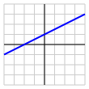
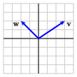

Section 3.5 Subspaces of \(\real^p\)
¶In this chapter, we have been looking at bases for \(\real^p\text{,}\) sets of vectors that are linearly independent and span \(\real^p\text{.}\) We saw that vectors in a basis for \(\real^p\) form the columns of an invertible matrix, which is necessarily a square matrix.
A basis for \(\real^p\) can be useful for it creates a coordinate system that helps us effectively navigate in \(\real^p\text{.}\) Sometimes, however, we find ourselves dealing with only a subset of \(\real^p\text{.}\) In particular, if we are given an \(m\times n\) matrix \(A\text{,}\) we have been interested in both the span of the columns of \(A\) and the solution space to the homogeneous equation \(A\xvec = \zerovec\text{.}\) In this section, we will expand the concept of basis to describe sets like these.
Preview Activity 3.5.1.
Let's consider the following matrix \(A\) and its reduced row echelon form.
Are the columns of \(A\) linearly independent? Do they span \(\real^3\text{?}\)
Give a parametric description of the solution space to the homogeneous equation \(A\xvec = \zerovec\text{.}\)
Explain how this parametric description produces two vectors \(\wvec_1\) and \(\wvec_2\) whose span is the solution space to the equation \(A\xvec = \zerovec\text{.}\)
What can you say about the linear independence of the set of vectors \(\wvec_1\) and \(\wvec_2\text{?}\)
Let's denote the columns of \(A\) as \(\vvec_1\text{,}\) \(\vvec_2\text{,}\) \(\vvec_3\text{,}\) and \(\vvec_4\text{.}\) Explain why \(\vvec_3\) and \(\vvec_4\) can be written as linear combinations of \(\vvec_1\) and \(\vvec_2\text{.}\)
Explain why \(\vvec_1\) and \(\vvec_2\) are linearly independent and \(\span{\vvec_1,\vvec_2} = \span{\vvec_1, \vvec_2, \vvec_3, \vvec_4}\text{.}\)
Subsection 3.5.1 Subspaces of \(\real^p\)
In the preview activity, we considered a \(3\times4\) matrix \(A\) and described two familiar sets of vectors. FIrst, we described the solution space to the homogeneous equation \(A\xvec = \zerovec\text{,}\) which is a set of vectors in \(\real^4\text{.}\) Next, we described the span of the columns of \(A\text{,}\) which is a set of vectors in \(\real^3\text{.}\) As we will see shortly, each of these sets has a common feature that we would like to study further: if we choose some vectors in one of these sets, any linear combination of those vectors is also in the set. This observation motivates the following definition.
Definition 3.5.1.
A subspace of \(\real^p\) is a subset of \(\real^p\) such that any linear combination of vectors in that set is also in the set.
Without mentioning it explicitly, we have frequently encountered and worked with subspaces earlier in our investigations. Let's look at some examples to get comfortable with this concept.
Example 3.5.2. Subsets that are not subspaces.
It will be helpful to first look at some examples of subsets of \(\real^2\) that are not subspaces. First, consider the set of vectors in the first quadrant of \(\real^2\text{;}\) that is, vectors of the form \(\twovec{x}{y}\) where both \(x,y \geq 0\text{.}\) This subset is illustrated on the left of Figure 3.5.3.
If this subset were a subspace of \(\real^2\text{,}\) any linear combination of vectors in the first quadrant must also be in the first quadrant. If we consider the vector \(\vvec=\twovec{3}{2}\text{,}\) however, we can form the linear combination \(-\vvec=\twovec{-3}{-2}\text{,}\) which is not in the first quadrant, as seen on the right of Figure 3.5.3. Therefore, the set of vectors in the first quadrant is not a subspace.
This shows something important, however. Suppose that \(S\) is a subspace and \(\vvec\) is a vector in \(S\text{.}\) Any scalar multiple of \(\vvec\) is a linear combination of \(\vvec\) and so must be in \(S\) as well. This means that the line containing \(\vvec\) must be in \(S\text{.}\)
With this in mind, let's consider another example where we look at vectors that are in either the first or third quadrant; that is, we will consider vectors of the form \(\twovec{x}{y}\) where either \(x,y\geq 0\) or \(x,y\leq 0\text{,}\) as seen on the left of Figure 3.5.4.
If \(\vvec\) is a vector in this set, then the line containing \(\vvec\) is in the set. However, if we consider the vectors \(\vvec = \twovec{0}{3}\) and \(\wvec=\twovec{-2}{0}\text{,}\) then their sum \(\vvec+\wvec = \twovec{-2}{3}\) is not in the subset, as seen on the right of Figure 3.5.4. This subset is also not a subspace.
Example 3.5.5. Subsets that are subspaces.
Let's look in \(\real^2\) and consider \(S\text{,}\) the set of vectors lying on the \(x\) axis; that is, vectors having the form \(\twovec{x}{0}\text{,}\) as shown on the left of Figure 3.5.6. Any scalar multiple of a vector lying on the \(x\) axis also lies on the \(x\) axis. Also, any sum of vectors lying on the \(x\) axis also lies on the \(x\) axis. Therefore, \(S\) is a subspace of \(\real^2\text{.}\) Notice that \(S\) is the span of the vector \(\twovec{1}{0}\text{.}\)
In fact, any line through the origin forms a subspace, as seen on the right of Figure 3.5.6. Indeed, any such line is the span of a nonzero vector on the line.
Activity 3.5.2.
We will look at some more subspaces of \(\real^2\text{.}\)
Explain why a line that does not pass through the origin, as seen to the right, is not a subspace of \(\real^2\text{.}\)
Explain why any subspace of \(\real^2\) must contain the zero vector \(\zerovec\text{.}\)
Explain why the subset \(S\) of \(\real^2\) that consists of only the zero vector \(\zerovec\) is a subspace of \(\real^2\text{.}\)
Explain why the subspace \(S=\real^2\) is itself a subspace of \(\real^2\text{.}\)
If \(\vvec\) and \(\wvec\) are two vectors in a subspace \(S\text{,}\) explain why \(\span{\vvec,\wvec}\) is contained in the subspace \(S\) as well.
Suppose that \(S\) is a subspace of \(\real^2\) containing two vectors \(\vvec\) and \(\wvec\) that are not scalar multiples of one another. What is the subspace \(S\) in this case?

This activity introduces an important idea. Suppose that we have a subspace \(S\) of \(\real^p\) and that vectors \(\vvec_1, \vvec_2, \ldots, \vvec_n\) are in \(S\text{.}\) We know that any linear combination of these vectors must also be in the subspace \(S\text{.}\) Since the span of these vectors is the set of all linear commbinations of the vectors, it must be the case that \(\span{\vvec_1,\vvec_2,\ldots,\vvec_n}\) is in the subspace \(S\) as well.
With this in mind, we can list all the subspaces of \(\real^2\text{.}\) If a subspace \(S\) contains a nonzero vector, then it must contain the line containing that vector. If \(S\) contains two vectors \(\vvec\) and \(\wvec\) that are not scalar multiples of one another, then \(\span{\vvec,\wvec} = \real^2\) so the subspace \(S\) must be all of \(\real^2\text{.}\) These are the only possibilities:
The subspace \(S=\{\zerovec\}\) consisting of only the zero vector .
A line through the origin.
The subspace \(S=\real^2\text{.}\)
Subspaces are the simplest subsets of \(\real^p\text{;}\) they are subsets in which we can perform the usual operations of scalar multiplication and vector addition without leaving the subset. Just as we can create bases for \(\real^p\text{,}\) we can create bases for subspaces as well.
Definition 3.5.7.
A basis for a subspace \(S\) of \(\real^p\) is a set of vectors in \(S\) that are linearly independent and span \(S\text{.}\) It can be seen that any two bases have the same number of vectors. Therefore, we say that the dimension of the subspace \(S\text{,}\) denoted \(\dim S\text{,}\) is the number of vectors in any basis.
With this in mind, we can describe the possible spaces of \(\real^3\text{.}\)
The subspace \(S=\{\zerovec\}\) is a subspace whose dimension is 0.
A line through the origin is a subspace whose dimension is 1. Any nonzero vector on the line forms a basis.

A plane through the origin is a subspace whose dimension is 2. For instance, the vectors \(\vvec_1\) and \(\vvec_2\) form a basis for the subspace shown here.

Finally, the subspace \(S=\real^3\) is a subspace of \(\real^3\) whose dimension is 3.
Of course, there cannot be a subspace of \(\real^3\) whose dimension is four or higher since any set of four vectors in \(\real^3\) cannot be linearly independent.
We are most interested in two subspaces that are naturally associated with a matrix. With this background, we are now ready to introduce them.
Subsection 3.5.2 The null space of \(A\)
When we looked at the linear independence of the columns of a matrix \(A\) in Section 2.4, we were led to consider the homogeneous equation \(A\xvec = \zerovec\text{.}\) We note that this solution space forms a subspace that we call the null space of \(A\text{.}\)
Definition 3.5.8.
If \(A\) is an \(m\times n\) matrix, we call the subset of vectors \(\xvec\) in \(\real^n\) satisfying \(A\xvec = \zerovec\) the null space of \(A\text{.}\) We denote it as \(\nul(A)\text{.}\)
The linearity of matrix multiplication, expressed in Proposition 2.2.3, tells us that \(\nul(A)\) is a subspace of \(\real^n\text{.}\) If \(\xvec_1\) and \(\xvec_2\) are both vectors in \(\nul(A)\text{,}\) we know that \(A\xvec_1 = \zerovec\) and \(A\xvec_2 = \zerovec\text{.}\) A linear combination of \(\xvec_1\) and \(\xvec_2\) can be written as \(c_1\xvec_1 + c_2\xvec_2\text{.}\) This linear combination is in \(\nul(A)\) because
Activity 3.5.3.
We will explore some null spaces in this activity.
-
Consider the matrix
\begin{equation*} A=\left[\begin{array}{rrr} 1 \amp 3 \amp -1 \\ -2 \amp 0 \amp -4 \\ 1 \amp 2 \amp 0 \\ \end{array}\right] \end{equation*}and give a parametric description of the null space \(\nul(A)\text{.}\)
Give a basis for and state the dimension of \(\nul(A)\text{.}\)
The null space \(\nul(A)\) is a subspace of \(\real^p\) for which \(p\text{?}\)
-
Now consider the matrix \(A\) whose reduced row echelon form is given:
\begin{equation*} A \sim \left[\begin{array}{rrrr} 1 \amp 2 \amp 0 \amp -3 \\ 0 \amp 0 \amp 1 \amp 2 \\ \end{array}\right]\text{.} \end{equation*}Give a parametric description of \(\nul(A)\text{.}\)
Notice that the parametric description gives a set of vectors that span \(\nul(A)\text{.}\) Explain why this set of vectors is linearly independent and hence forms a basis. What is the dimension of \(\nul(A)\text{?}\)
For this matrix, \(\nul(A)\) is a subspace of \(\real^p\) for what \(p\text{?}\)
What is the relationship between the dimensions of the matrix \(A\text{,}\) the number of pivot positions of \(A\) and the dimension of \(\nul(A)\text{?}\)
Suppose that the columns of a matrix \(A\) are linearly independent. What can you say about \(\nul(A)\text{?}\)
If \(A\) is an invertible \(n\times n\) matrix, what can you say about \(\nul(A)\text{?}\)
Suppose that \(A\) is a \(5\times 10\) matrix and that \(\nul(A) = \real^{10}\text{.}\) What can you say about the matrix \(A\text{?}\)
Let's consider an example of our own. Suppose we have a matrix \(A\) and its reduced row echelon form:
To find a parametric description of the solution space to \(A\xvec=\zerovec\text{,}\) imagine that we augment both \(A\) and its reduced row echelon form by a column of zeroes, which leads to the equations
Notice that \(x_3\text{,}\) \(x_4\text{,}\) and \(x_5\) are free variables so we rewrite these equations as
Writing this as a vector, we have
This expression says that any vector \(\xvec\) satisfying \(A\xvec= \zerovec\) is a linear combination of the vectors
It is easy to see that these vectors are linearly independent. Remember that we saw in Section 2.4 that this set of vectors is linearly dependent if any linear combination \(c_1\vvec_1 + c_2\vvec_2 + c_3\vvec_3 = \zerovec\) implies that \(c_1=c_2=c_3 = 0\text{.}\) But this linear combination would be
This expression shows that \(c_1=c_2=c_3=0\) so the vectors are linearly independent.
Therefore, we see that the vectors
form a basis for \(\nul(A)\) showing that \(\nul(A)\) is a three-dimensional subspace of \(\real^5\text{.}\)
Notice that the dimension of \(\nul(A)\) is equal to the number of free variables, which equals the number of columns of \(A\) minus the number of pivot positions. This example illustrates a general principle that motivates the following dimension.
Definition 3.5.9.
The \(rank\) of a matrix \(A\text{,}\) denoted \(\rank(A)\text{,}\) is the number of pivot positions of \(A\text{.}\)
As illustrated by the previous example, if \(A\) is an \(m\times n\) matrix, then \(\nul(A)\) is a subspace of \(\real^n\) and
or
We may consider two extreme cases. If \(\nul(A)=\{\zerovec\}\text{,}\) then \(\dim~\nul(A) = 0\) so that \(\rank(A) = n\text{.}\) This means that the number of pivot positions is equal to the number of columns. In this case, there are no free variables in the description of the solutions to the homogeneous equation \(A\xvec = \zerovec\) so there is only the trivial solution. This is exactly what we are saying when we say that \(\nul(A) = \{\zerovec\}\text{.}\)
Similarly, if \(\nul(A) = \real^n\text{,}\) then \(\dim~\nul(A) = n\text{,}\) which implies that \(\rank(A) = 0\text{.}\) This means that \(A\) does not have any pivot positions and so \(A\) must be the zero matrix \(0\text{.}\) This is also consistent with what we already know: if \(\nul(A)=\real^n\text{,}\) then \(A\xvec = \zerovec\) for any vector \(\xvec\text{.}\) This can only be true if \(A = 0\text{.}\)
Subsection 3.5.3 The column space of \(A\)
Besides the null space, the other subspace that is naturally associated to a matrix \(A\) is its column space.
Definition 3.5.10.
If \(A\) is an \(m\times n\) matrix, we call the span of its columns the column space of \(A\) and denote it as \(\col(A)\text{.}\)
Notice that the columns of \(A\) are vectors in \(\real^m\text{,}\) which means that any linear combination of the columns is also in \(\real^m\text{.}\) The column space is therefore a subset of \(\real^m\text{.}\)
We can also see \(\col(A)\) is a subspace of \(\real^m\text{.}\) First, notice that a vector is in \(\col(A)\) if it is a linear combination of the columns of \(A\text{.}\) This means that \(\bvec\) is in \(\col(A)\) if there is a vector \(\xvec\) such that \(A\xvec = \bvec\text{.}\) To see that \(\col(A)\) is a subspace of \(\real^m\text{,}\) we need to check that any linear combination of vectors in \(\col(A)\) is also in \(\col(A)\text{.}\) This follows, once again, from the linearity of matrix multiplicaiton expressed in Proposition 2.2.3.
If vectors \(\bvec_1\) and \(\bvec_2\) are in \(\col(A)\text{,}\) then there are vectors \(\xvec_1\) and \(\xvec_2\) such that \(A\xvec_1 = \bvec_1\) and \(A\xvec_2 = \bvec_2\text{.}\) Therefore, if we have a linear combination of \(\bvec_1\) and \(\bvec_2\text{,}\) then
which shows that the linear combination is itself in the column space of \(A\text{.}\) Therefore, \(\col(A)\) is a subspace of \(\real^m\text{.}\)
Activity 3.5.4.
We will explore some column spaces in this activity.
-
Consider the matrix
\begin{equation*} A= \left[\begin{array}{rrr} \vvec_1 \amp \vvec_2 \amp \vvec_3 \end{array}\right] = \left[\begin{array}{rrr} 1 \amp 3 \amp -1 \\ -2 \amp 0 \amp -4 \\ 1 \amp 2 \amp 0 \\ \end{array}\right]\text{.} \end{equation*}Since \(\col(A)\) is the span of the columns, the vectors \(\vvec_1\text{,}\) \(\vvec_2\text{,}\) and \(\vvec_3\) naturally span \(\col(A)\text{.}\) Are these vectors linearly independent?
Show that \(\vvec_3\) can be written as a linear combination of \(\vvec_1\) and \(\vvec_2\text{.}\) Then explain why \(\col(A)=\span{\vvec_1,\vvec_2}\text{.}\)
Explain why the vectors \(\vvec_1\) and \(\vvec_2\) form a basis for \(\col(A)\text{.}\) This shows that \(\col(A)\) is a 2-dimensional subspace of \(\real^2\) and is therefore a plane.
-
Now consider the matrix \(A\) and its reduced row echelon form:
\begin{equation*} A = \left[\begin{array}{rrrr} -2 \amp -4 \amp 0 \amp 6 \\ 1 \amp 2 \amp 0 \amp -3 \\ \end{array}\right] \sim \left[\begin{array}{rrrr} 1 \amp 2 \amp 0 \amp -3 \\ 0 \amp 0 \amp 0 \amp 0 \\ \end{array}\right]\text{.} \end{equation*}We will call the columns \(\vvec_1\text{,}\) \(\vvec_2\text{,}\) \(\vvec_3\text{,}\) and \(\vvec_4\text{.}\) Explain why \(\vvec_2\text{,}\) \(\vvec_3\text{,}\) and \(\vvec_4\) can be written as a linear combination of \(\vvec_1\text{.}\)
Explain why \(\col(A)\) is a 1-dimensional subspace of \(\real^2\) and is therefore a line.
What is the relationship between the dimension \(\dim~\col(A)\) and the rank \(\rank(A)\text{?}\)
What is the relationship between the dimension of the column space \(\col(A)\) and the null space \(\nul(A)\text{?}\)
If \(A\) is an invertible \(9\times9\) matrix, what can you say about the column space \(\col(A)\text{?}\)
If \(\col(A)=\{\zerovec\}\text{,}\) what can you say about the matrix \(A\text{?}\)
Once again, we will consider the matrix \(A\) and its reduced row echelon form:
We will denote the columns as \(\vvec_1,\vvec_2,\ldots,\vvec_5\text{.}\)
It is certainly true that \(\col(A) = \span{\vvec_1,\vvec_2,\ldots,\vvec_5}\) by the definition of the column space. However, the reduced row echelon form of the matrix shows us that the vectors are not linearly independent so \(\vvec_1,\vvec_2,\ldots,\vvec_5\) do not form a basis for \(\col(A)\text{.}\)
From the reduced row echelon form, however, we can see that
This means that any linear combination of \(\vvec_1,\vvec_2,\ldots,\vvec_5\) can be written as a linear combination of just \(\vvec_1\) and \(\vvec_2\text{.}\) Therefore, we see that \(\col(A) = \span{\vvec_1,\vvec_2}\text{.}\) Moreover, the reduced row echelon form shows that \(\vvec_1\) and \(\vvec_2\) are linearly independent, which implies that they form a basis for \(\col(A)\text{.}\) Therefore, \(\col(A)\) is a 2-dimensional subspace of \(\real^3\text{,}\) which is a plane in \(\real^3\text{,}\) having basis
In general, a column without a pivot position can be written as a linear combination of the columns that have pivot positions. This means that a basis for \(\col(A)\) will always be given by the columns of \(A\) having pivot positions. Therefore, the dimension of the column space \(\col(A)\) equals the rank \(\rank(A)\text{:}\)
If \(A\) is an \(m\times n\) matrix, this also says that
If \(A\) has a pivot position in every row, then \(\dim~\col(A) = \rank(A) = m\text{.}\) This implies that \(\col(A)\) is an \(m\)-dimensional subspace of \(\real^m\) and therefore, \(\col(A) = \real^m\text{.}\) This agrees with our earlier explorations in which we found that the columns of a matrix span \(\real^m\) if there is a pivot in every row.
At the other extreme, suppose that \(\dim~\col(A) = 0\text{.}\) The matrix \(A\) then has no pivots, which means that \(A\) must be the zero matrix \(0\text{.}\)
Subsection 3.5.4 Summary
Once again, we find ourselves revisiting our two fundamental questions, expressed in Question 1.4.2, concerning the existence and uniqueness of solutions to linear systems. The column space \(\col(A)\) contains all the vectors \(\bvec\) for which the equation \(A\xvec = \bvec\) is consistent. The null space \(\nul(A)\) describes the solution space to the equation \(A\xvec = \zerovec\text{,}\) and its dimension tells us whether this equation has a unique solution.
A subset \(S\) of \(\real^p\) is a subspace of \(\real^p\) if any linear combination of vectors in \(S\) is also in \(S\text{.}\) This essentially means that we can perform the usual vector operations of scalar multiplication and vector addition without leaving \(S\text{.}\) A basis of a subspace \(S\) is a linearly indepedent set of vectors in \(S\) whose span is \(S\text{.}\)
If \(A\) is an \(m\times n\) matrix, then its null space \(\nul(A)\) is the solution space to the homogeneous equation \(A\xvec = \zerovec\text{.}\) It is a subspace of \(\real^n\text{.}\)
A basis for \(\nul(A)\) is found through a parametric description of the solution space of \(A\xvec = \zerovec\text{.}\) We see that \(\dim~\nul(A) = n - \rank(A)\text{.}\)
The column space \(\col(A)\) is the span of the columns of \(A\) and forms a subspace of \(\real^m\text{.}\)
A basis for \(\col(A)\) is found from the columns of \(A\) that have pivot positions. The dimension is therefore \(\dim~\col(A) = \rank(A)\text{.}\)
Exercises 3.5.5 Exercises
1.
Suppose that \(A\) and its reduced row echelon form are
The null space \(\nul(A)\) is a subspace of \(\real^p\) for what \(p\text{?}\) The column space \(\col(A)\) is a subspace of \(\real^p\) for what \(p\text{?}\)
What are the dimensions \(\dim~\nul(A)\) and \(\dim~\col(A)\text{?}\)
Find a basis for the column space \(\col(A)\text{.}\)
Find a basis for the null space \(\nul(A)\text{.}\)
2.
Suppose that
Is the vector \(\threevec{0}{-1}{-1}\) in \(\col(A)\text{?}\)
Is the vector \(\fourvec{2}{1}{0}{2}\) in \(\col(A)\text{?}\)
Is the vector \(\threevec{2}{-2}{0}\) in \(\nul(A)\text{?}\)
Is the vector \(\fourvec{1}{-1}{3}{-1}\) in \(\nul(A)\text{?}\)
Is the vector \(\fourvec{1}{0}{1}{-1}\) in \(\nul(A)\text{?}\)
3.
Determine whether the following statements are true or false and provide a justification for your response. Unless otherwise stated, assume that \(A\) is an \(m\times n\) matrix.
If \(A\) is a \(127\times 341\) matrix, then \(\nul(A)\) is a subspace of \(\real^{127}\text{.}\)
If \(\dim~\nul(A) = 0\text{,}\) then the columns of \(A\) are linearly independent.
If \(\col(A) = \real^m\text{,}\) then \(A\) is invertible.
If \(A\) has a pivot position in every column, then \(\nul(A) = \real^m\text{.}\)
If \(\col(A) = \real^m\) and \(\nul(A) = \{\zerovec\}\text{,}\) then \(A\) is invertible.
4.
Explain why the following statements are true.
If \(B\) is invertible, then \(\nul(BA) = \nul(A)\text{.}\)
If \(B\) is invertible, then \(\col(AB) = \col(A)\text{.}\)
If \(A\sim A'\text{,}\) then \(\nul(A) = \nul(A')\text{.}\)
5.
For each of the following conditions, construct a \(3\times 3\) matrix having the given properties.
\(\dim~\nul(A) = 0\text{.}\)
\(\dim~\nul(A) = 1\text{.}\)
\(\dim~\nul(A) = 2\text{.}\)
\(\dim~\nul(A) = 3\text{.}\)
6.
Suppose that \(A\) is a \(3\times 4\) matrix.
Is it possible that \(\dim~\nul(A) = 0\text{?}\)
If \(\dim~\nul(A) = 1\text{,}\) what can you say about \(\col(A)\text{?}\)
If \(\dim~\nul(A) = 2\text{,}\) what can you say about \(\col(A)\text{?}\)
If \(\dim~\nul(A) = 3\text{,}\) what can you say about \(\col(A)\text{?}\)
If \(\dim~\nul(A) = 4\text{,}\) what can you say about \(\col(A)\text{?}\)
7.
Consider the vectors
and suppose that \(A\) is a matrix such that \(\col(A)=\span{\vvec_1,\vvec_2}\) and \(\nul(A) = \span{\wvec_1,\wvec_2}\text{.}\)
What are the dimensions of \(A\text{?}\)
Find such a matrix \(A\text{.}\)
8.
Suppose that \(A\) is an \(8\times 8\) matrix and that \(\det A = 14\text{.}\)
What can you conclude about \(\nul(A)\text{?}\)
What can you conclude about \(\col(A)\text{?}\)
9.
Suppose that \(A\) is a matrix and there is an invertible matrix \(P\) such that
What can you conclude about \(\nul(A)\text{?}\)
What can you conclude about \(\col(A)\text{?}\)
10.
In this section, we saw that the solution space to the homogeneous equation \(A\xvec = \zerovec\) is a subspace of \(\real^p\) for some \(p\text{.}\) In this exercise, we will investigate whether the solution space to another equation \(A\xvec = \bvec\) can form a subspace.
Let's consider the matrix
Find a parametric description of the solution space to the homogeneous equation \(A\xvec = \zerovec\text{.}\)
Graph the solution space to the homogeneous equation to the right.

Find a parametric description of the solution space to the equation \(A\xvec = \twovec{4}{-2}\) and graph it above.
Is the solution space to the equation \(A\xvec = \twovec{4}{-2}\) a subspace of \(\real^2\text{?}\)
Find a parametric description of the solution space to the equation \(A\xvec=\twovec{-8}{4}\) and graph it above.
What can you say about all the solution spaces to equations of the form \(A\xvec = \bvec\) when \(\bvec\) is a vector in \(\col(A)\text{?}\)
Suppose that the solution space to the equation \(A\xvec = \bvec\) forms a subspace. Explain why it must be true that \(\bvec = \zerovec\text{.}\)